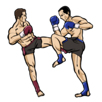
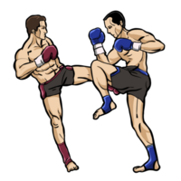

Muay Thai
Muay Thai is a martial art and combat sport, known as the "art of eight limbs," that originated in Thailand. It uses fists, elbows, knees, and shins to strike, making it a dynamic form of both distance and close-range fighting. Initially developed as a form of self-defense for Thai soldiers, it is now Thailand's national sport and is practiced worldwide for fitness, competition, and self-defense.